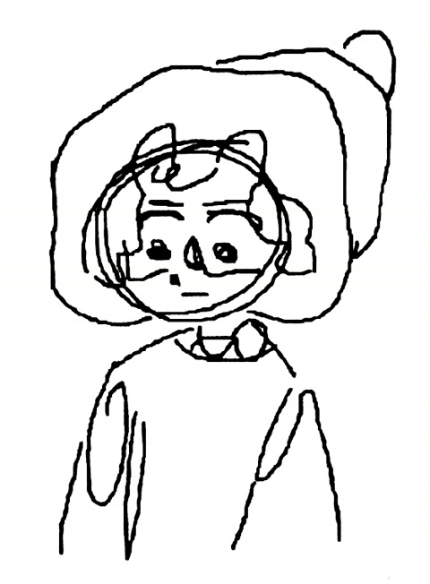
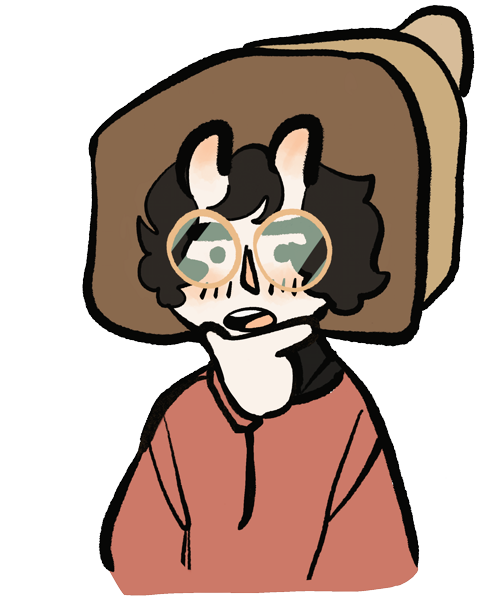
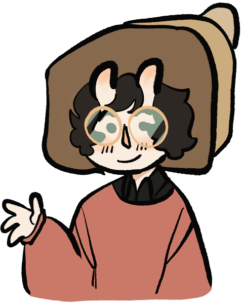
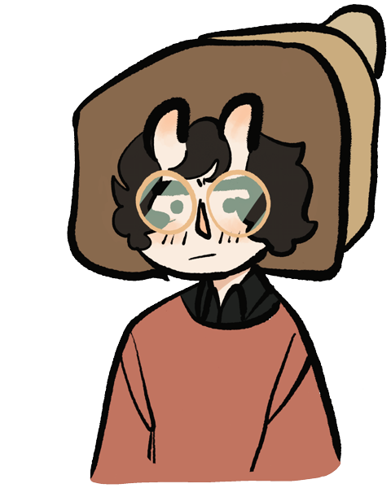
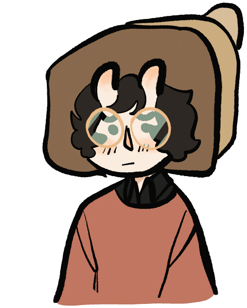
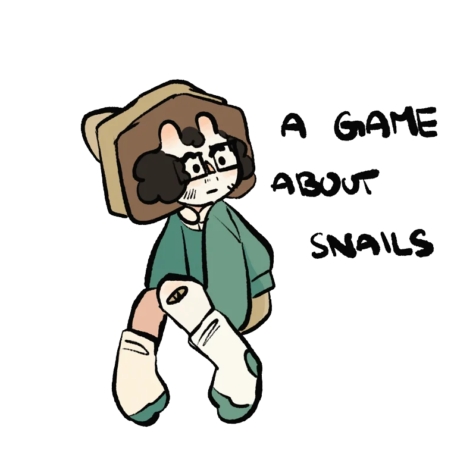
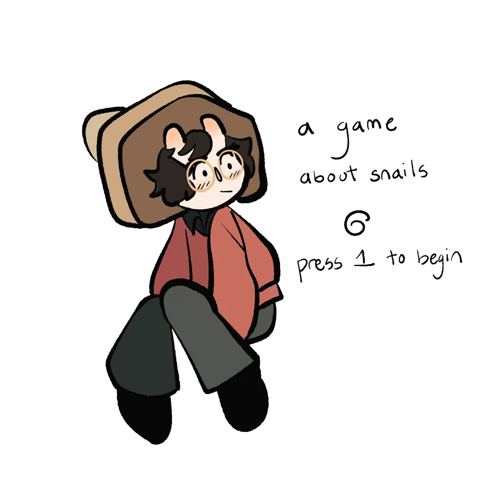
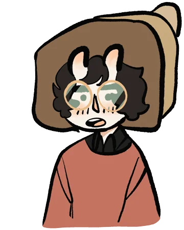
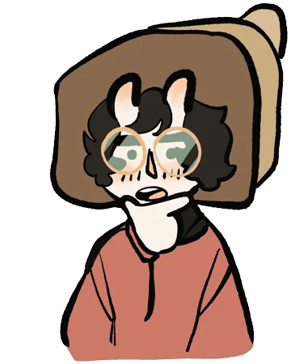
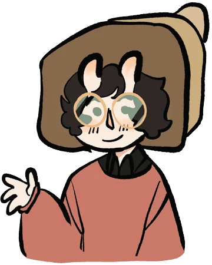

How A Game About Snails got made
Version 1.0. The beginning of something bigger.
Concept
A small visual novel about snails, shells, and being true to yourself.
Designing Slime Tony
My first ever Slime Tony was a quick sketch I did in class, in MS Paint, with my mouse. Then came the one I turned in for my final, and a redesign in late 2023, right before I graduated.



In the version I turned in, his portraits were still images, and the only thing that moved was the title screen. With the redesign, every portrait became a looping two-frame GIF, and I put a lot more polish and detail into the artwork.



Versions
I made Snails in 2022 as my final for a college class. In late 2023, right before I graduated, I came back to it: I redesigned Tony, animated his portraits, added more dialogue options, and moved it out of the p5 web editor and onto a live server, so it could launch with my portfolio site.


Scene structure
Snails runs on a very simple p5 scene method. Each scene is one line from Tony, one of his portraits, and the replies you can pick. Pick one and the next scene plays.
-

Tony talks - Reply 1 Reply 2
-

Tony talks - Reply 1 Reply 2
-

Tony talks
In the version I turned in, most scenes had a single reply. For the 2023 update I gave most of them a second option, so you have a couple of ways to answer Tony, even when they mean the same thing.
In the code, a scene looks like this:
scenes[0] = {
text: "Oh, hi.\n\n[1] Hello :)",
image: assets.smiling_waving,
keys: ["1"],
nextPages: [1],
sound: song,
};Near the start you type in your name, and Tony uses it for the rest of the conversation.
A Game About Slugs builds off the same structure.
What it means to me
Start writing here.
Tools used
Background music by joshuuu and sound effects by noahkuehne. Determination Mono Web is a typeface by Abacadaba.